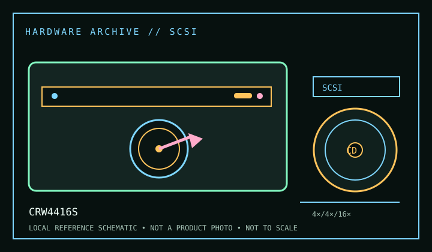

[ CD-R AND CD-RW DRIVES // IDENTIFIED MODEL ]
Yamaha CRW4416S
SCSI CD-R/RW recorder rated for 4× CD-R writing, 4× CD-RW rewriting and 16× reading. The “S” denotes the SCSI member of the family; do not substitute E/IDE model instructions or firmware.

IDENTIFICATION: Confirm the manufacturer label, complete model suffix, interface and firmware revision against the cited manual before installation or archival use. Ratings are maximums; actual performance depends on media, mode, host and software.
Documented specifications
| Subcategory | CD-R and CD-RW drives |
|---|---|
| Exact model | CRW4416S |
| CD-R write | 4× |
| CD-RW rewrite | 4× |
| CD-ROM / CD read | 16× |
| Recorded/read formats | Writes CD-R and CD-RW; reads CD-ROM, CD-ROM XA, CD-I, CD-DA, CD-Bridge/multisession, CD-Extra and Video CD formats described in the manual. Format access may require period authoring or filesystem software. |
| Recording modes | Disc-at-Once, Track-at-Once, Session-at-Once and supported multisession/packet functions vary with software and media. This older generation predates later buffer-underrun technologies; verify burns rather than assuming a successful command means error-free media. |
| Interface / mechanics | SCSI-2 (50-pin internal host connection); requires a compatible SCSI adapter, correct device ID and a properly terminated chain. Confirm the physical version before planning internal/external cabling. |
| Host and operating-system compatibility | Requires a SCSI host adapter and OS driver in addition to optical/recording software. On a legacy host, verify adapter BIOS, termination, device ID and software support; modern adapters may not expose old writer commands or bundled applications. |
| Firmware / revision notes | Firmware is specific to the CRW4416S SCSI model and revision. Never use firmware for CRW4416E or an external model without explicit Yamaha compatibility. Write speed is limited by supported disc type, software mode and media certification. |
Compatibility & preservation notes
- Requires a SCSI host adapter and OS driver in addition to optical/recording software. On a legacy host, verify adapter BIOS, termination, device ID and software support; modern adapters may not expose old writer commands or bundled applications.
- Firmware is specific to the CRW4416S SCSI model and revision. Never use firmware for CRW4416E or an external model without explicit Yamaha compatibility. Write speed is limited by supported disc type, software mode and media certification.
- For an imaging or recording session, log the exact drive and firmware, interface/controller, operating system, application version, media identifier, selected mode and any read/verification errors. Keep checksummed image copies and logs.
- Handle discs at the edge or center hole and store in cases in a cool, dry place away from direct sunlight. Avoid adhesive labels, abrasive cleaning and undocumented solvents or polishing.
Read support is not write support. A format listed for this drive does not guarantee every disc revision or copy-protection scheme will work.
Sources
- Yamaha CRW4416S user guide, Internet ArchiveArchived owner’s guide for model installation, SCSI configuration and operating specifications.
- Yamaha CRW4416S user manual, ManualsLibSecond archived manual record; verify SCSI model and revision at the unit label.
- Library of Congress — CD-R and DVD-R/RW longevityArchival handling guidance for recordable optical media.